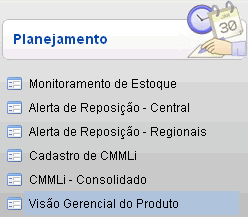
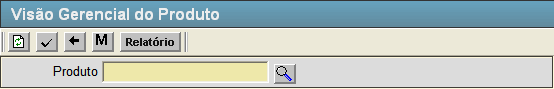

Visão Gerencial do Produto [ Voltar ]Esta tela permite o usuário acessar informações detalhadas do produto, como posição de estoque atual, indicadores de reposição, compras, consumo, movimentação e demanda. O formulário "Visão Gerencial do Produto" encontra-se dentro do menu "Programação - Planejamento".

Ao clicar no formulário, o sistema exibirá a seguinte tela:

1º Passo: informe o código do produto para o qual deseja gerar a visão gerencial.
2º Passo: clique no botão |
 [Pesquisar]
para selecionar o produto a partir de uma listagem contendo todos os produtos
cadastrados.
[Pesquisar]
para selecionar o produto a partir de uma listagem contendo todos os produtos
cadastrados.